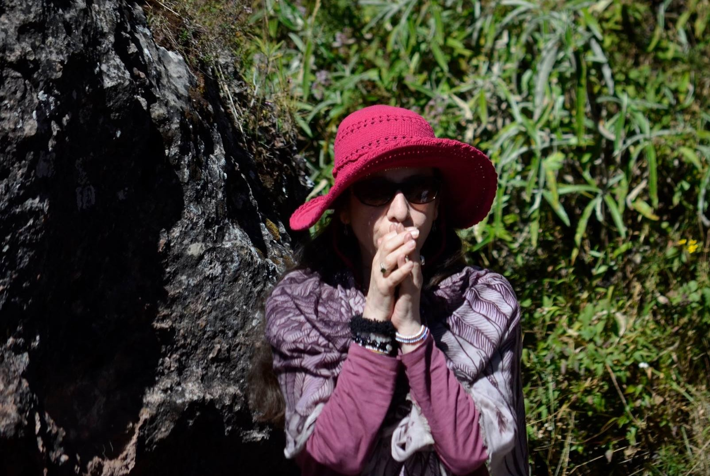

One to One Healing Sessions

These sessions are offered to anyone who feels called to explore the Ancient Medicine teachings on a one to one basis rather than in a group. One to one sessions provide an opportunity for those who feel called to develop a deeper understanding of their relationship with themselves, their community, and the Earth to enjoy a connection with The Medicine teachings. These sessions are made available for personal healing work, sharing the Medicine teachings and exploring the use of ceremony and other Shamanic practises to bring balance, harmony and healing on all levels. A one to one session may take place, face to face, or on line, depending on the circumstances and requirements of the individual.